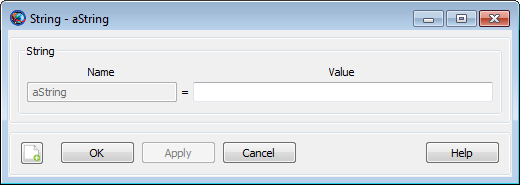

String
String — A user-defined string variable
Description
The String resource is used to store a string value for use by commands in the Mission Sequence.
In the script environment, String resources are
initialized to the string 'STRING_PARAMETER_UNDEFINED'
on creation. In the GUI environment, they’re initialized to the empty
string (''). String resources can be assigned using
string literals or (in the Mission Sequence) other
String resources, numeric
Variable resources, or resource parameters that have
string types.
Fields
The String resource has no fields; instead, the resource itself is set to the desired value.
| Field | Description | ||||||||||||
|---|---|---|---|---|---|---|---|---|---|---|---|---|---|
value | The value of the string variable.
|
GUI
 |
The GMAT GUI lets you create multiple String resources at once without leaving the window. To create a String:
In the String Name box, type the desired name of the string.
In the String Value box, type the initial value of the string. This is required and must be a literal string value. Quotes are not necessary when setting the value.
Click the => button to create the string and add it to the list on the right.
You can create multiple String resources this way. To edit an existing string in this window, click it in the list on the right and edit the value. You must click the => button again to save your changes.
|  |
You can also double-click an existing String in the resources tree in the main GMAT window. This opens the string properties box above that allows you to edit the value of that individual string.
Remarks
String resources can (in the Mission Sequence) be set using numeric Variable resources. The numeric value of the Variable is converted to a string during the assignment. The numeric value is converted to a string representation in either floating-point or scientific notation (whichever is more appropriate) with a maximum of 16 significant figures.